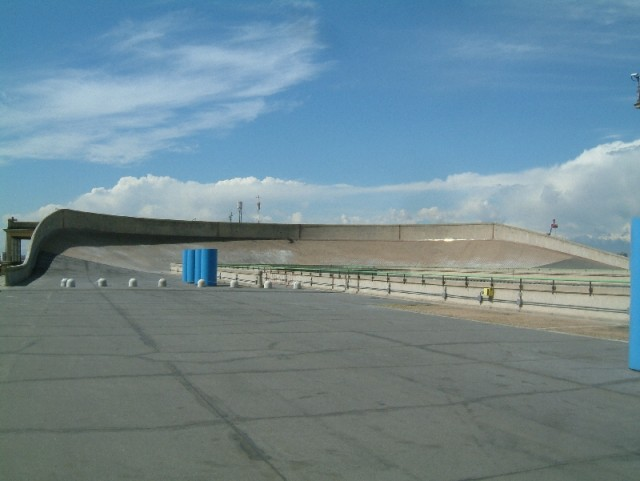
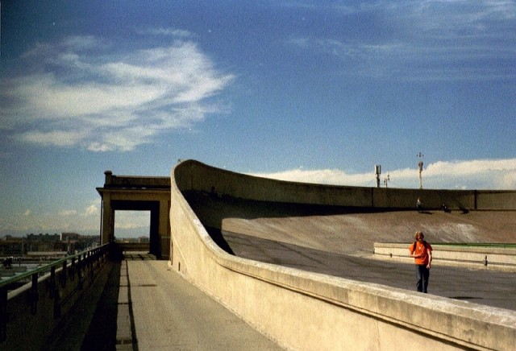
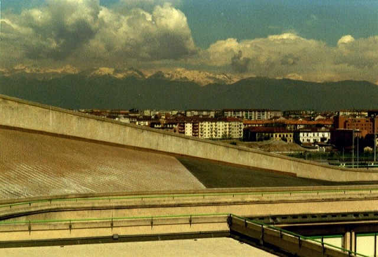
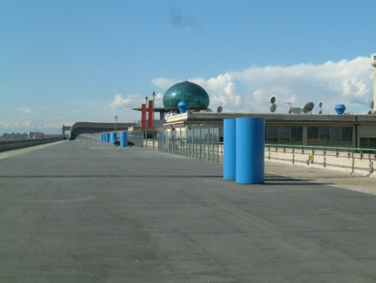
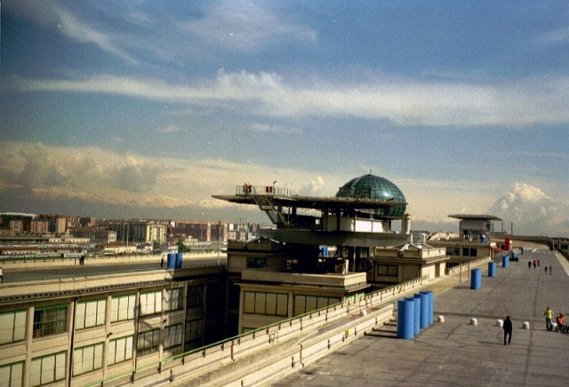
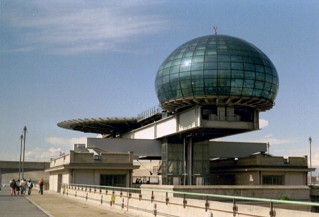
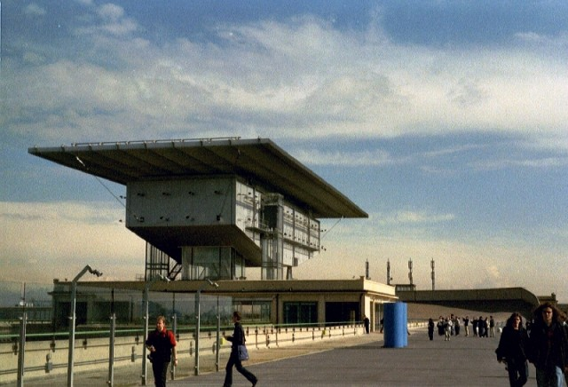
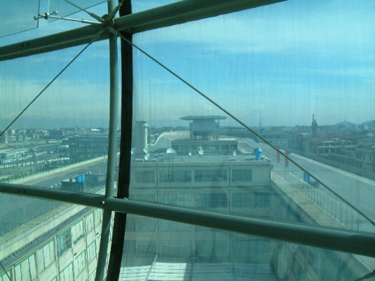

Return to racingcircuits.net's Photo Archive Main Index
Lingotto - Test Track
|| Contents | Building | Test Track || Home ||
Click on a hyperlink above to view the photos
Return to racingcircuits.net's Photo
Archive Main Index









©Eelco Wind & Arbam de Boer. Reproduced here with kind permission.